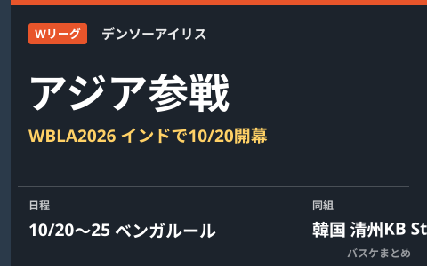

デンソーアイリス、WBLA2026へ 10月20日からインドで韓国・清州KBなどと対戦

Wリーグのデンソーアイリスが、FIBAアジア地域が主催する女子クラブの国際大会「Women's Basketball League Asia（WBLA）2026」に出場します。大会は2026年10月20日から25日までインド・ベンガルールのSree Kanteerava Indoor Stadiumで開催され、デンソーアイリスはグループBで韓国の清州KB Stars、インドのインディアン・レールウェイズと対戦します。WBLAは2024年・2025年と中国で開催されてきましたが、中国以外での開催は今回が初めてです。
グループBで韓国王者級の清州KB Starsと対戦
大会は10月20日から22日まで予選リーグの総当たりが行われ、各組上位2チームが準決勝に進出。3位チームは10月24日の5-6位決定戦に回ります。決勝は10月25日の1試合制で、3位決定戦は決勝の直前に行われる予定です。デンソーアイリスが入ったグループBには、韓国のKBL女子リーグに所属する清州KB Starsと、地元インドのインディアン・レールウェイズが入っています。
| 項目 | 内容 |
|---|---|
| 大会名 | Women's Basketball League Asia（WBLA）2026 |
| 開催地・会場 | インド・ベンガルール／Sree Kanteerava Indoor Stadium |
| 開催期間 | 2026年10月20日〜25日 |
| デンソーアイリスの組 | グループB（清州KB Stars・インディアン・レールウェイズ） |
| 決勝 | 10月25日に1試合制で開催 |
Wリーグ勢にとって開幕前の国際経験の場に
Wリーグ2026-27シーズンのレギュラーシーズンは10月31日開幕と発表されており、デンソーアイリスにとってWBLA2026は開幕前の重要な実戦の場となります。アジアの強豪クラブと対戦する経験は、国内シーズンに向けたチームの仕上がりを確認する機会にもなりそうです。
Q. WBLAとはどんな大会？
A. FIBAアジア地域が主催する、アジアの女子クラブチームによる国際大会です。2024年・2025年は中国で開催され、2026年大会が中国以外での初開催となります。
出典：FIBA公式「Bengaluru to host WBLA 2026」／FIBAアジア公式「WBL Asia 2026 schedule confirmed」ほか
https://about.fiba.basketball/en/news/bengaluru-to-host-wbla-2026
https://about.fiba.basketball/en/regions/asia/news/wbl-asia-2026-schedule-confirmed